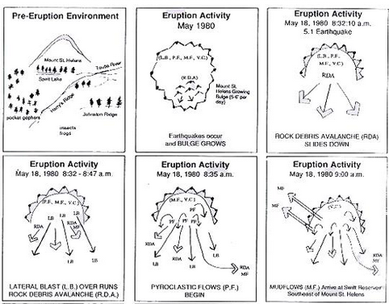

Plan
How do I plan a multimedia story?
Of course, making a multimedia story is easier said than done. To write a story, you only need a pencil, some paper and your imagination. But to create a multimedia story, you must also plan how that story will be told using other mediums like video, audio, information graphics, and more. So planning a multimedia story can be a lot of work. Luckily, there are some simple steps you can take to plan a great multimedia story.
To start, you must have an interesting story to tell. Even if you don’t have a complete narrative written, it’s a good idea to outline your story, identifying the important parts of the beginning, middle and end.
Parts of a story
Beginning
Start with a simple definition of what a volcano is.
A volcano is a rupture on the Earth’s surface (also called the crust) that allows hot lava, volcanic ash and gasses to escape from below the surface of the Earth.
Then explain how volcanoes form.
The Earth’s crust is broken into 17 tectonic plates that are like big, floating slabs of solid rock just below the bottom of an ocean in a place called the Earth’s mantle. Volcanoes occur on Earth because the tectonic plates shift, making room for the lava, ash, and gasses from the hottest part of the Earth’s core to escape. Therefore, on Earth, volcanoes are generally found where tectonic plates are moving away from or toward one another.
Tell about the dangers of volcanoes and the damage they can cause.
But also tell about the beauty and power of volcanoes.
The Earth’s crust is broken into 17 tectonic plates that are like big, floating slabs of solid rock just below the bottom of an ocean in a place called the Earth’s mantle. Volcanoes occur on Earth because the tectonic plates shift, making room for the lava, ash, and gasses from the hottest part of the Earth’s core to escape. Therefore, on Earth, volcanoes are generally found where tectonic plates are moving away from or toward one another.
Middle
Tell about some famous volcanoes, including some interesting facts about each one.
There are big and small volcanoes all over the world. But some are more famous than others.
Mt. Vesuvius is an active volcano in Naples, Italy that has erupted more than 30 times. Its most famous eruption took place all the way back in A.D. 79, when an eruption that lasted several days covered the cities of Pompeii and Stabiae in lava and ash.
Krakatoa is another famous volcano in Indonesia that in 1883 erupted with 13,000 times the power of an atomic bomb. The sound of the spewing smoke and rock was reportedly heard thousands of miles away, as far as islands off the eastern coast of Africa.
Mount St. Helens is a famous volcano in the U.S. state of Washington that laid dormant for more than 120 years before it exploded in 1980 after an earthquake triggered the blast. The eruption caused a cascading landslide of hot ash and stone that traveled a total of 15 miles at speeds of at least 300 miles per hour. At the same time, a mushroom-shaped plume of ash shot 16 miles into the air, eventually covering three states. Mt. St. Helens erupted again in 2008!
Finally, Mauna Loa on the Big Island in Hawaii is the largest volcano on Earth, with a summit nearly 13,700 feet high. It is also one of the world's most active volcanoes. Since 1843, Mauna Loa has erupted 33 times, most recently in 1984. The volcano is 60 miles long and 30 miles wide. Its name Mauna Loa means "Long Mountain" in Hawaiian.
End
Conclude with some fun facts about how people have come to understand volcanoes and why they exist.
Many ancient cultures believed that volcanic eruptions were the result of supernatural causes. For example, the ancient Greeks thought volcanoes could only be explained as acts of the gods, who were angry with humans. A 16th Century astronomer even thought that volcanoes were the ducts for the Earth's tears.
Later, volcanic action was believed to be the result of chemical reactions in a thin layer of molten rock near the Earth’s surface. But today we know that volcanoes are the awesome display of the fiery power that is deep within the Earth.
You may also decide to further develop your outline into a more fully developed narrative. This narrative may be supplemented with multimedia content. Or it may be the basis for additional multimedia elements. Either way, always remember that like all stories, a good multimedia story begins with good content.
Once you have an outline, you can begin to brainstorm how you might want to integrate multimedia into your story. You will want your multimedia story to take advantage of the strengths of different media types. So a good brainstorming session starts with knowing how to make good use of multimedia in your storytelling.
What kinds of multimedia can I use in my story?
Video
Video should show action or take viewers somewhere they wouldn’t otherwise have access to. This video shows an eruption of Mount Kilauea in Hawaii. You can see that the video shows an up-close view of actual volcanic activity, which is something most people would never be able to see otherwise. A video like this could be combined with audio that explains what is happening, or it could stand alone as an amazing example of your story in action.
Photos
This is a placeholder caption.
Photos should be used capture strong emotion or a key moment in time. Several photos can also be presented together as a photo gallery or slideshow, which also let’s the viewer interact with this part of the story.
Audio
Audio can be used alone or combined with video or photos. One of the most powerful types of audio in multimedia storytelling is called ambient sound, which is the natural sound of an environment. This audio is the sound of a volcano erupting.
Information graphics

Information graphics can be used to show complicated processes or to chart numbers in an easy-to-understand format. They can even be interactive, allowing viewers to explore the information at their own pace. This interactive diagram shows the parts of a volcano. Tap the red dots to get more information. You can turn photographs into interactive graphics or you can even draw your own illustrations.
You can find free stock media content like the ones shown here on Wikimedia Commons, a database of millions of freely usable media files. Or we’ll show you how you can make your own in the BUILD section of this site!
How do I decide how to integrate multimedia into my story?
Creative brainstorming is a process you can use to figure out the best way to structure your multimedia story. This process involves going through your story, part-by-part, and asking yourself some basic questions. These include:
- Where is the action in my story?
- Are there parts of the story that would be better told with visuals like photos or illustrations?
- What are the sounds associated with my story?
- Are there experts I can interview for my story?
- Is there a process that can be explained visually?
When you are brainstorming, don’t limit yourself. List all possible answers to the questions above. Then, sift through your answers to find the best ideas. Watch this video to watch the brainstorming session that brought the volcano story to life!
How do I decide how all of the elements of my story will work together?
Obviously, a multimedia story is more complex than a written narrative alone. So, before you begin building multimedia content, it’s a good idea to sketch or storyboard your story plan. The photo gallery below shows some sketches and storyboards for the volcano story.
